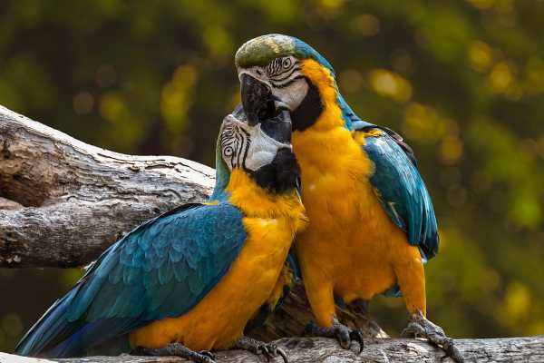

Los tipos de aves más adecuados como mascotas
A la hora de elegir un ave como mascota, es necesario valorar qué tipos de cuidado va a necesitar para poder proporcionarle el ambiente idóneo para que crezca sana y feliz. Antes de nada, debemos aclarar que hay muchas especies de aves que en nuestro país están prohibidas como mascotas y con las que muchas veces se trafica. No está de más consultarlo, pues la crianza de aves amenazadas en cautiverio es un delito que puede acarrear multas muy elevadas. Por otro lado, debes estar muy concienciado de que tener una mascota no es un hobby, ya que no son juguetes que podamos echar de casa cuando nos hayamos aburrido. Son seres vivos sensibles que merecen ser queridos y cuidados por sus dueños. En la actualidad, existen más de 300 especies perfectamente adaptadas a la vida en libertad. Por eso, antes de comprar un ave en concreto, debemos saber cuáles son sus necesidades para garantizar su bienestar teniendo en cuenta factores como su tamaño y el espacio que tenemos disponible, su nivel de socialización y domesticación, nuestra experiencia en el cuidado de aves y la esperanza de vida de la especie. Esto último es muy importante, ya que mientras un canario puede durar unos 15 años, los loros pueden vivir hasta 50 años. Además, debes saber que hay aves que son muy sociables y que disfrutan viviendo en pareja, como es el caso del periquito, el agaporni, el diamante mandarín o el loro. Así pues, si estás pensando en comprar un ave para tenerla en casa, a continuación te traemos una lista de cuáles son más adecuadas y cuáles son sus necesidades para que puedas valorar cuál es la que mejor va con tu estilo de vida y podrás cuidar mejor.
Agapornis
Los agapornis son una de las aves preferidas por los amantes de los pájaros domésticos por ser muy adorables. Eso sí, hay que tener en cuenta que son animales muy sociables y que suelen ser más felices viviendo en pareja, por lo que es recomendable tener un macho y una hembra. Es un pájaro muy alegre que suele estar de buen humor, lo que hace que canten a menudo y que también nos alegren el día a nosotros. Además, con la ventaja de que no requieren de muchos cuidados.
Periquitos
Junto con los agapornis, son de las aves domésticas más preferidas. Su alimentación se basa en verduritas y semillas y siempre necesitan tener algo cerca para afilarse el pico, como un hueso de jibia. Una de las mayores ventajas es que son muy limpios, por lo que es habitual verlos acicalándose con su propia saliva. No obstante, también es importante que tengan agua para hacerlo. Además, debes controlar que las uñas no le crezcan en exceso.
Ninfas
Las ninfas son animales que requieren de mucho cariño, pero a cambio son excelentes compañeras. Se dejan acariciar, te buscan e, incluso, pueden llegar a ingeniárselas para llamar tu atención de mil formas. Además, son muy listas, por lo que no es difícil enseñarles a emitir diferentes sonidos.
Jilgueros
Los jilgueros son pájaros muy enérgicos y son muy bonitos. La mayor ventaja es que no suelen ser aves muy rebeldes, ya que están habituados a vivir en las casas. Además, es una especie muy independiente por lo que no requieren de muchos cuidados y son felices sin que tengamos que prestarles mucha atención. Eso sí, debes saber que cantan mucho, por lo que puede ser bueno para unos y un incordio para otros, algo que deberás valorar antes de comprarlo.
Cacatúas
Las cacatúas son aves muy inquietas que necesitan mucha interacción y salir a dar un paseo por la casa a diario. De lo contrario, se aburren y se ponen muy tristes. Además, necesitan mucho espacio. Por eso, si no vas a estar mucho tiempo en casa o sales de viaje con frecuencia, es mejor que lo descartes. Lo bueno es que son muy simpáticas y que podemos enseñarles a emitir muchos sonidos, lo que animará mucho tu hogar.
Loros
Los loros están muy acostumbrados a vivir con personas y aprenden muy rápido. Además, no necesitan jaula. Eso sí, debes tener en cuenta que son aves muy dependientes cuando se les presta demasiada atención. Es importante que les enseñemos a valerse por sí mismas.

Alimentación:
¿Qué darle de comer a un pájaro hogareño?
Dependiendo de la especie se deberá establecer una dieta adecuada a sus necesidades. Pore tal motivo, te recomendamos visitar a un especialista a fin de poder brindarte la mejor opción. No obstante, la mayoría de aves se alimentan principalmente de semillas, nueces, frutos, brotes y otras materias vegetales. Algunas especies consumen a veces animales y carroña; mientras que otras están especializadas en comer néctar, polen y fruta blanda.
¿Qué darle de comer a un pájaro de la calle?
Lo más habitual es comprar o hacer un comedero para pájaros y colgarlo en las inmediaciones del domicilio. En él suelen ponerse desde las tradicionales miguitas de pan, mejor integral y siempre remojado, hasta mezclas de semillas o premios para aves que podemos comprar en las tiendas. De forma casera, el arroz y los huevos cocidos, la fruta bien madura, las pipas o el maíz, que no las palomitas, que son demasiado saladas, son alternativas que les podemos ofrecer. Eso sí, poner comida a los pájaros de la calle puede hacer que se acostumbren al alimento fácil y dejen de buscarlo por su cuenta. No es muy recomendable que dependan tanto de nosotros. No olvidemos que no son animales domésticos.